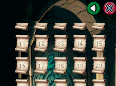
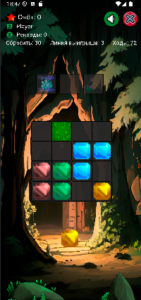
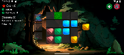

SpiritualAdviser

Нажимая на свиток Вы запускаете основное поле игры.

Размер игрового поля меняется от сложности уровня.
Слева вверху находится блок с иноформацией о игроке,
каждый игрок имеет свой уникальный прогресс.
На поле расставлены препятствия в виде камней и травы,
сбрасывая линии выигрыша, вы повреждаете препятствия.
Камень уничтожается за два раза, трава при первом сбросе.
Анимция повреждения и уничтожения сделана спрайтами - sprite.
Появление кристалов реализована Compose animation
Так же предусмотрены бонусы для помощи в игре.
Они открываются по мере набора очков.
перемещение сделано встороенным функционалом pointerInput
Для взаимодействия объектов написана своя логика колизий.
Она следит за столкновением объектов, вычисляет доступные ячейки - места для кристалов и бонусов.
Для оптимизации Использую Kotlin Coroutine и просчитываю координаты только в момент движения объекта.
Обновлениt Ui с помощью compose state.
Настройка уроней проискодит файлом конфигурации, доступным для гейм дизайнера.
Однако написан свой генератор уровней,
введя желаемое количество уровней, логика сконфигурирует постепенное усложнение уровней.
Гейм дизайнер может в ручную настроить как отдельные так и все уровни (поправить, улучшить условия).

Для этого использую отдельную верстку расположения компонентов.